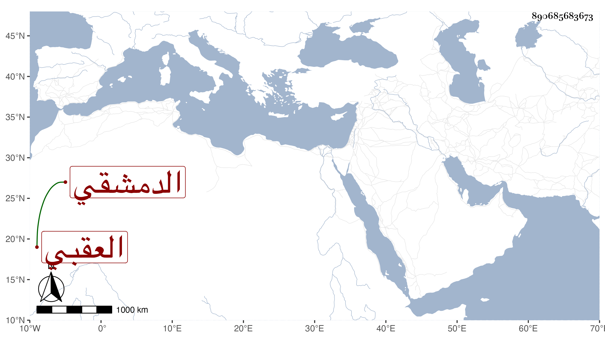

0902Sakhawi.DawLamic.ITO20230111-ara1.EIS1600.890685683673
Biography ID: 890685683673
268
محمد بن عبد الله ناصر الدين الدمشقي العقبي ، قال شيخنا في إنبائه كان جنديا يباشر في الاستادارية ثم ترك ذلك ولبس بزي الصوفية وصحب أبا بكر الموصلي ثم بنى زاوية بالعقبة الصغرى وعمل شيخها وأنزل بها فقراء فكان يطعمهم فكثر أتباعه وصار يتكسب من المستأجرات وكان حسن الشكل واللحية بهي المنظر . مات في جمادى الأولى سنة خمس عشرة عن ثلاث وستين .
